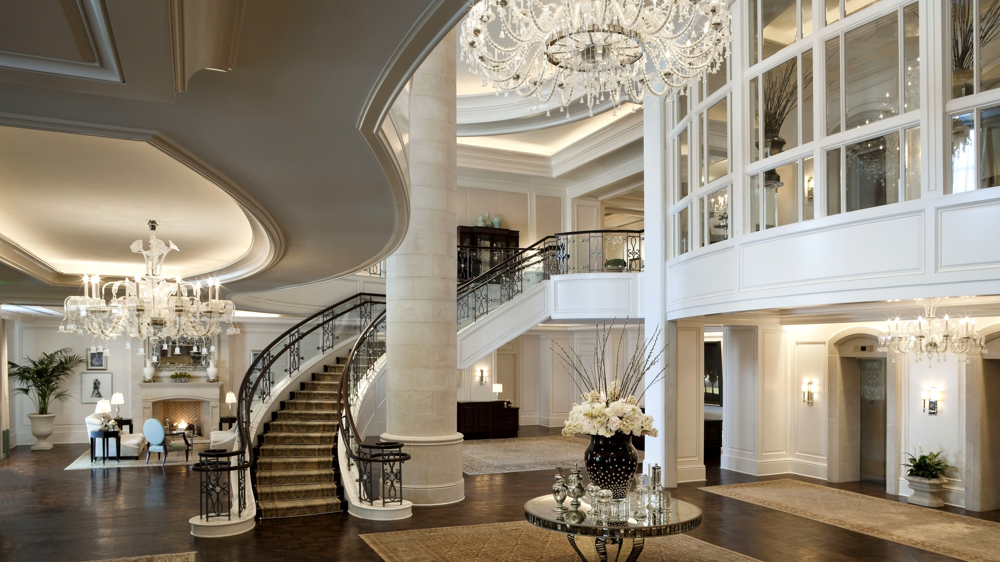

Sunset Lodge Hotel, Colombo
Set on the Galle Face Promenade overlooking the Indian Ocean, this upmarket hotel is surrounded by high-end shopping and dining. It's a 6-minute walk from Galle Face Green urban park and 2 km from Beira Lake.
Featuring city, lake or ocean views, the refined rooms offer free Wi-Fi, flat-screen TVs, and tea and coffeemaking facilities, plus minibars. Upgraded rooms add balconies. Suites offer separate living rooms and access to a club lounge.